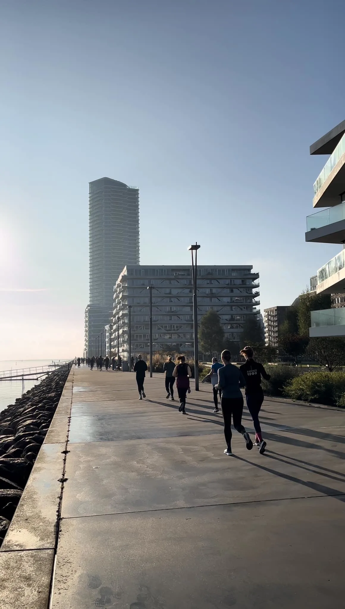

Træningstips til Studerende: Kom i Form Effektivt
Intro
Som studerende kan det være udfordrende at finde tid til træning mellem forelæsninger, opgaver og sociale aktiviteter. Men fysisk aktivitet behøver ikke at tage hele din dag eller sprænge budgettet. Ved at træne smart og udnytte de muligheder, der findes i Aarhus, kan du komme i form hurtigt og effektivt – selv med en travl kalender. I denne artikel giver vi dig de bedste træningstips, så du kan optimere din træning og få mest muligt ud af din tid.
Om Effektiv Træning for Studerende

Effektiv træning handler om at gøre mest muligt med den tid, du har til rådighed. Her er nogle konkrete tips til, hvordan
du kan gøre din træning mere produktiv:
- Intervaltræning (HIIT): Højintensiv intervaltræning (HIIT) er en af de mest effektive
træningsformer for studerende med en travl hverdag. Ved at skifte mellem korte, intense træningsperioder og
kortere pauser kan du forbrænde flere kalorier på kort tid. Mange fitnesscentre i Aarhus tilbyder HIIT-klasser,
men du kan også lave øvelserne derhjemme eller i en park.
- Planlæg din uge: Strukturér din træning ved at planlægge, hvornår og hvor du træner. Aarhus har
mange gratis træningsmuligheder som udendørs fitnessområder, hvor du kan træne, når det passer dig.
- Brug tidseffektive øvelser: Fokuser på øvelser, der aktiverer flere muskelgrupper på én gang, såsom squats, lunges og push-ups. Disse øvelser sparer tid og opbygger både styrke og kondition samtidig.
- Træn med en ven: At træne sammen med en studieven kan gøre træningen sjovere og mere motiverende. Nogen fitnesscentre tilbyder rabatter hvis du skriver dig op med en makker. Der er også gratis løbeklubber, hvor du kan deltage.
Heavy Duty Program
Mike Mentzer's Heavy Duty program er et højintensivt træningssystem baseret på kort,
intens styrketræning med færre sæt og længere restitutionstider. Grundidéen er,
at musklerne skal trænes til total udmattelse for at stimulere maksimal vækst med minimal træningsvolumen.
Programmet består af kun et eller to sets pr. øvelse, men hvert set køres til failure (udmattelse),
hvor man ikke kan lave flere gentagelser. Mentzer anbefalede 4-7 gentagelser pr. set med langsomme,
kontrollerede bevægelser. Øvelserne blev udført med fuldt fokus på form og intensitet.
Ofte kun en til få træninger om ugen. Det er derfor brugbart og effektivt for studerende der ikke har tid til mange lange træninger om ugen.
En uges program kunne f.eks. se således ud:
- Træning A (Bryst og Ryg)
- Øvelse 1: Bænkpress– 1 opvarmningssæt, 1 sæt til udmattelse (8-10 reps)
- Øvelse 2: Flatbench flyes – 1 sæt til udmattelse (6-8 reps)
- Øvelse 3: Wide-grip pulldown – 1 opvarmningssæt, 1 sæt til udmattelse (6-8 reps)
- Øvelse 4: Barbell rows – 1 sæt til udmattelse (6-8 reps)
- Træning B (Ben)
- Øvelse 1: Squats eller leg press – 1 opvarmningssæt, 1 sæt til udmattelse (10-12 reps)
- Øvelse 2: Leg extensions – 1 sæt til udmattelse (6-8 reps)
- Øvelse 3: Leg curls – 1 sæt til udmattelse (6-8 reps)
- Øvelse 4: Calf raises – 1 sæt til udmattelse (10-12 reps)
- Træning C (Skuldre og Arme)
- Øvelse 1: Skulderpres – 1 opvarmningssæt, 1 sæt til udmattelse (6-8 reps)
- Øvelse 2: Lateral raises – 1 sæt til udmattelse (6-8 reps)
- Øvelse 3: Barbell curls – 1 sæt til udmattelse (6-8 reps)
- Øvelse 4: Dips – 1 sæt til udmattelse (6-8 reps)
Efter en træning, skal der minimum gå 4 dage til du træner samme muskelgruppe igen.
Dette program var revolutionerende, da det fokuserede på kvalitet fremfor kvantitet,
hvilket tillod længere restitutionsperioder og reduceret risiko for overtræning.
Afslutning
Det kan være svært at finde motivationen til at træne, når studiepresset vokser, men husk, at regelmæssig motion kan forbedre både din koncentration og dit humør. Aarhus er en fantastisk by for studerende, der vil holde sig i form – og det behøver ikke koste dig dyrt. Find en træningsform, der passer til dig, og sæt dig realistiske mål.
At komme i form som studerende i Aarhus behøver ikke at være svært eller tidskrævende. Ved at implementere små ændringer i din hverdag, som fx at vælge cyklen frem for bussen eller tage et kort træningspas derhjemme, kan du hurtigt se resultater. Uanset om du foretrækker udendørstræning, fitnesscentre med studierabat eller hjemmetræning, er der mange muligheder for at holde sig aktiv. Så kom i gang i dag – din krop (og din hjerne) vil takke dig for det!